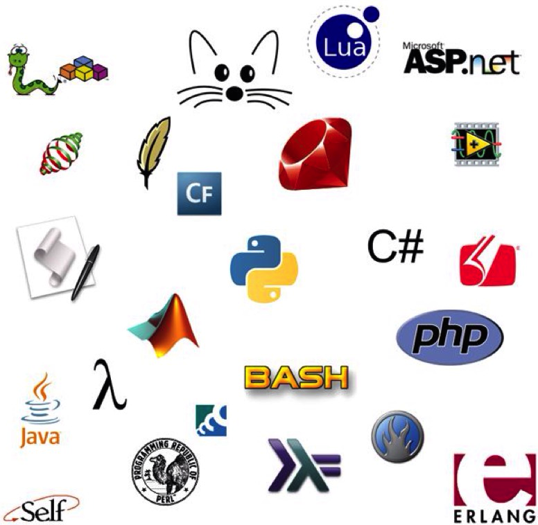

这几种编程语言图标，你知道几个？看到中间那两条蟒蛇没？它就是我们今天的主角—python.
如果语言是人物的话，哈哈...
tiboe index, 2015年3月语言排行榜前20，有何感想？
目前编程语言越来越多，经常见一些大公司自己推出一门语言，现有的语言也在不断添加新的特性，变得更加复杂。你是否也对语言选择有一些困扰？
有些人认为编程语言只是工具，而大多数编程语言都是图灵完备的，理论上任何一门语言都可以实现相同的功能，所以只要熟练掌握一门语言就可以了。
而有些人认为选择适合的语言，更容易设计，处理复杂的任务，也能极大提高工作效率。Paul Graham 在《黑客与画家》提到:
以Lisp和C的比较为例，我听到的大多数说法是C代码的长度是Lisp的7倍到10倍。但是最近，New Architect杂志上
有一篇介绍ITA软件公司的文章，里面说"一行Lisp代码相当于20行C代码"，因为此文都是引用ITA总裁的话，所以
我想这个数字来自ITA的编程实践。 如果真是这样，那么我们可以相信这句话。ITA的软件，不仅使用Lisp语言，
还同时大量使用C和C++，所以这是他们的经验谈。
根据上面的这个数字，如果你与ITA竞争，而且你使用C语言开发软件，那么ITA的开发速度将比你快20倍。如果你
需要一年时间实现某个功能，它只需要不到三星期。反过来说，如果某个新功能，它开发了三个月，那么你需要
五年才能做出来
如果你只会一门编程语言，遇到所有问题，是不是都想用该语言解决问题，而不会先考虑哪种语言更适合呢？是的，如果你手头有把锤子的话，你看什么问题都像是钉子。
我认为比掌握多少门语言更重要的是要熟悉编程的思想。如果你不熟悉常用的编程思想，一些语言的牛逼哄哄的特性放你面前，而你压根没想过去用它，掌握再多语言有啥用呢？比如，你熟练掌握C++，但是你很少想着要去封装一些类，那还不好回去用C呢。。。
以前的编程语言是面向过程的，接着面向对象大行其道，现在函数式编程开始重新焕发风采。前面几种大家应该都比较熟悉，下面介绍函数式编程思想和元语言编程，更详细的程序编程思想和原理，可以看MIT的经典教材《计算机程序的构造和解释》。
函数式编程（英语：Functional programming）或者函数程序设计，又称泛函编程，是一种编程范型，它将电脑运算视为数学上的函数计算，并且避免使用程序状态以及易变对象。函数编程语言最重要的基础是λ演算（lambda calculus）。而且λ演算的函数可以接受函数当作输入（引数）和输出（传出值）。 比起命令式编程，函数式编程更加强调程序执行的结果而非执行的过程，倡导利用若干简单的执行单元让计算结果不断渐进，逐层推导复杂的运算，而不是设计一个复杂的执行过程。
举个简单的例子，如: 求小于10的偶自然数的平方和,
传统命令式的语言可能这样写:
result=0
for i in range(1,10):
if i%2==0:
result+=i**2
而使用函数式编程思想，它使用enumerate-filter-map-reduce这种范式，让数据流过这些函数，最后产生结果:
data=range(1,10) # 枚举
data1=filter(lambda x: x%2==0, data) # 过滤出偶数
data2=map(lambda x:x**2, data1) # 每个偶数映射出它的平方数
data3=reduce(lambda (x,y): x+y, data2) # 平方数相加
可以看到每个函数都有独立的输入输出，而不会修改变量值，而上面命令式的编程则依赖于result变量记录计算结果。
函数式编程由于比较少修改变量状态，所以更加适合并发的情况。谷歌的mapreduce并行编程工具，就是基于这种思想，在云计算中得到了广泛的运用。
元编程是指某类计算机程序的编写，这类计算机程序编写或者操纵其它程序（或者自身）作为它们的数据，或者在运行时完成部分本应在编译时完成的工作。多数情况下，与手工编写全部代码相比，程序员可以获得更高的工作效率, 或者给与程序更大的灵活度去处理新的情形而无需重新编译。 如 AutoCAD中提供了一种类似Lisp的语法，Linux下的绘图工具GIMP也提供了一种类似Lisp的绘图语言用来扩展。
下面引用《MacTalk: 人生元编程》中的介绍:
元在英文里就是meta，元编程就是meta programming，元数据就是meta data。元编程就是能够操作代码的代码，
元数据就是能够描述数据的数据。
我们先看一下代码的世界。如果把代码比作一座小镇，那么其中的类、函数、方法、变量、代码块、宏，就是小镇上安
居乐业的居民，他们相互协作，相互依赖，一起建设着有XX特色的美好家园。
在能够支持元编程的语言世界里，你可以和这些居民打招呼，还可以进行内省（introspection），获取其自身的一
些信息和行为，甚至你能够为这些居民动态增加一些能力和行为，或者在这些居民奔跑的时候改变他们的行为，或者创
建一些新的居民。这样的语言有Ruby、Python等。
在不支持元编程的语言世界里，大家分为两个状态，编译时和运行时，一旦编译器完成了自己的工作，这些方法和函数
就看不见了，他们成为内存中的幽灵，你只能通过固定的方式使用他们，而无法获取他们自身的信息。当然，即使是这
样的语言，为了增加编程的灵活性，也通过各种方式来提升元编程的能力，比如Java和C#笨手笨脚的使用反射方式，
C++则通过模板方式，但古老的C就无能为力了，因为他没有元编程能力。
现在我们就知道了，编程语言虽然各有侧重，但是语言和语言之间的能力和特点区别还是很大的，不管你现在使用的是
什么语言，我都建议你们去学一门具备原 生的元编程能力的语言，比如Ruby、Python、Lisp、Objective-C等。
python语言由 Guido van Rossum 发明，之所以起这个名字，是因为他太喜欢 Monty Python 这个喜剧组合了。这个组合还制作过 Monty Python and the Holy Grail，中译名《巨蟒与圣杯》，它是唯一一部进入IMDB前50排名的“无厘头”电影。由英国人拍摄的这部带有奇幻色彩的电影，以调侃的方式讲述了阿瑟王和手下的圆桌武士们在寻找圣杯途中遇到的种种趣事，很逗，推荐一看。看下作者的品味，说不定能加深对python语言的理解呢。。。
各个领域都有一些经典的圣级级别的图书，可以购买一本纸质书或电子书，没事就拿出来瞅瞅，边学边练习。还可以上appstore上下载各种语言相关的app。
很多语言都是相通的，一般都会涉及运行环境、数据类型(数字、字符串、数组、字典、集合等)、表达式、函数、控制流、类、方法等。这些内容并不复杂，通过一些练习就能熟练的掌握它们。然后，再去深入了解面向对象、并发、异常、文件系统、网络、常用库，并持续练习，这时你一般就能做出一些实际的软件了。
一些知识点、常用api或google后解决的问题可以使用一些云笔记记录下来。有原创的感想，也可以用发发博文。
自己学习和同事交流之余，可以参与一些网络社区的交流，推荐： 技术问答社区：http://stackoverflow.com ，在技术领域几乎包括万象，无所不知。 GitHub：https://github.com ，几乎全世界优秀的开源软件作品都在上面。
另外，也可以参加豆瓣、知乎、果壳等群组，订阅一些牛人的博客。
当你学习了多门语言后，你就会想去比较各种语言的炫酷特性或败笔，你会想设计者为什么要这么设计？为什么有些特性，被大多数语言借鉴了？当你思考这些问题时，你对这些语言的本质就更了解了。
Lisp语言的大佬，Paul Graham在他的《黑客与画家》中，讨论了一百年以后，人们会使用什么语言开发软件。
作者提出了以下几个观点:
{kind=link}
{kind=link}
{kind=link}